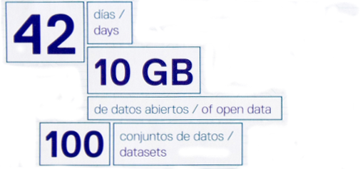
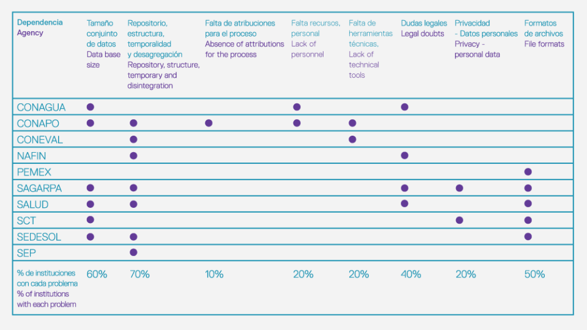

100 datasets in 42 days for Mexico

Preparing 10 datasets from 10 government departments in only 42 days sounds like a job for data superheroes. So it makes sense that Mexico's Data Squads, who achieved just that, adopted a superhero-style logo for their work:
datos.gob.mx is the new official Mexican Government open data portal, launched in July 2014 with the help of the Partnership for Open Data (POD), a partnership that brings together the World Bank, the Open Data Institute and Open Knowledge.
The Data Squads, led by Ms Ania Calderón, achieved a great deal in a short time by spending intensive time in 10 departments:
- Identifying open data challenges and opportunities in each agency
- Providing training and mentoring for civil servants
- Delivering the platform and guide for publishing sustainable open government data.
A mixed bag of challenges
While working with each of the 10 government agencies, the squad discovered a number of different challenges facing the publication of open data.

Managing data caused the most common problems. The size of the data sets made it difficult to export and to create simple, consumable formats. And constant representation is a challenge when the structure of the data (column titles) was found to change over time.
Several departments were also concerned about their legal obligations, including whether they had the right to publish data, and whether they risked being sued by citizens following publication.
The Data Squads were on board to provide technical and legal assistance, helping to quickly solve problems and build confidence within government agencies. The Data Squads ensured that the agency remained the owner of the data, and could also benefit from it being published openly.
Education, training and mentoring
The Open Data Institute put together a training program for the Data Squads that I delivered as a series of remote mentoring sessions. In each session, we focussed on a different aspect of data publication or usage and provided materials specific to the requirements of rolling out a wider mentoring programme within the agencies of the Mexican government.
The Data Squads then identified three key areas that connected with all the agencies:
- Planning and evaluation: Identifying key datasets for publication, barriers to publication and potential solutions.
- Opening and quality: Covering data formats, best practices and tools to enable improvements in data quality.
- Publication: Making publication a one click process through the Mexican ADELA platform
In training sessions, Mexican Government officials were delighted to find that open data could help them do their own jobs better, as well as providing data for the community.
Delivering a long term solution
The Mexican open data catalog is a showcase example of what can be achieved quickly, with time and backing from a dedicated team. The major challenge is sustainability, which is a core focus of the 6 steps of publishing open data in Mexico:
- Build a community and create ownership
- Map current processes. Where is the data? Where to start simply?
- Enhance the data quality, increasing the value
- Reengineer for effective delivery via the web
- Publish your data
- Identify high impact projects to use the data
Regular data publication is best supported by a community and the installation of data publication in agencies. It took the UK much longer to publish this much high-quality data, but Mexico's example goes to show what can be done now that the standards and guidelines are much more mature.
The Partnership for Open Data started less than a year ago and brings together the Open Data Institute, the Open Knowledge Foundation and the World Bank to help policy makers and citizens in developing countries understand and exploit the benefits of open data. You can contact us on [email protected].